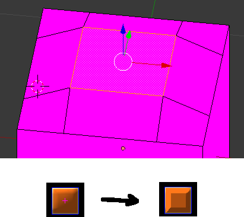

This is what i got now. First picture from blender is to give you idea what i am trying to shade. Cube on the left is what i have achieved with a point light + Diff technique and diffuse texture.
auto lightNode = _scene->CreateChild("Light");
lightNode->SetPosition(Vector3(-1, PLAY_FIELD_HEIGHT, -2));
auto light = lightNode->CreateComponent<Light>();
light->SetLightType(LIGHT_POINT);
light->SetCastShadows(true);
light->SetRange(100);
light->SetFadeDistance(100);
Any idea how i could get it lit so it looks like something like cube on the right? Basically i want each plane to geet same amount of light without taking into account distance from the light.